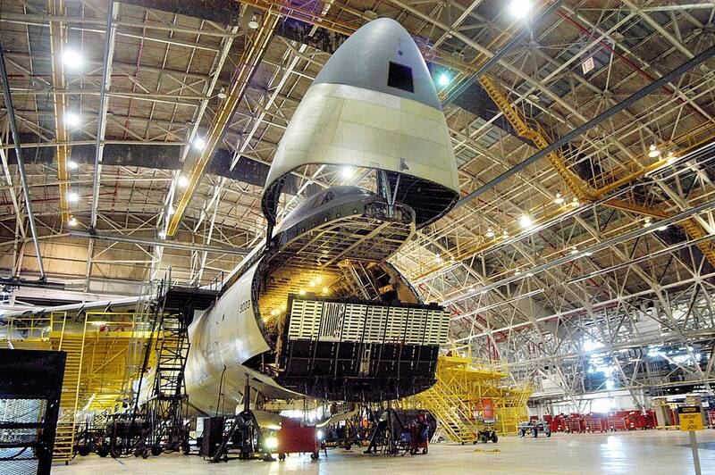

Robins AFB Georgia Georgia · Military base · 32.642°N, 83.589°W A C-5 Galaxy in maintenance at Robins Air Force Base. Photo: Sue Sapp, U.S. Air Force, Public domain (source) Air Force logistics center. 1 Open in the interactive Watcher Sources Robins Air Force Base Wikipedia